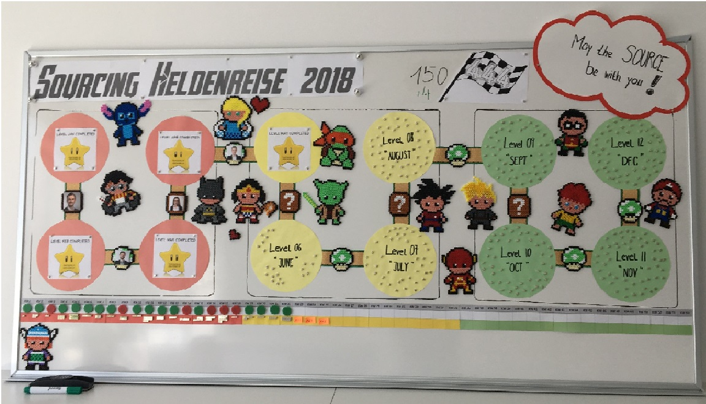

<h1 class="page-header"><span class="oi oi-compass"></span> Scoreboard - Unsere Sourcer und ihre Helden</h1>

<div class="alert alert-danger top-right" role="alert" ng-show="message && iserrmessage">
    <span class="oi oi-flash" aria-hidden="true"></span>
    {{message}}
</div>

<div class="alert alert-success top-right" role="alert" ng-show="message && !iserrmessage">
    <span class="oi oi-check" aria-hidden="true"></span>
    {{message}}
</div>

<div class="card w-100">
    <div class="panel panel-default">

        <div class="panel-body">            
            <!-- Image Map Generated by http://www.image-map.net/ -->
            

            <map name="scoreboardmap">
                <area target="" alt="Stitch" title="Stitch" href="" coords="169,154,227,238" shape="rect" onmouseover="writeText('<b>Stitch (Helene)</b> (auch bekannt als <i>Experiment 626</i>) - Disney Lilo und Stitch<br>Start: September 2018<br> Stitch wurde als erschaffen um Chaos anzustiften und böse zu sein.<br>Durch das hawaiianische Mädchen, Lilo, lernte Stitch nach und nach zu lieben und selbstlos zu handeln. <br> <i>Ohana means family, family means nobody gets left behind or forgotten</i> ist ein wichtiges hawaiianisches Sprichwort, das in der Serie / im Film immer wieder vorkommt.<br>')">
                <area target="" alt="Harry Potter" title="Harry Potter" href="" coords="167,277,220,345" shape="rect" onmouseover="writeText('<b>Harry Potter (Eric)</b> <br>Start: Februar 2016<br>Harry Potter ist der Hauptprotagonist aus der gleichnamigen Fantasy-Romanreihe von Joanne K. Rowling. <br>Während seines Aufenthaltes an der Hogwarts Schule für Hexerei & Zauberei erlebt er zahlreiche Abendteuer und trotz mithilfe seiner Magie allen Gefahren – nicht zuletzt Lord Voldemort, dem Mörder seiner Eltern.')">
                <area target="" alt="Yoda" title="Yoda" href="" coords="501,280,560,366" shape="rect" onmouseover="writeText('<b>Yoda (Larissa)</b> - Star Wars<br>Start: Juni 2018<br>66cm groß, 900 Jahre alt, grün, Glatze, Spitzohren – das der weiseste & mächtigste Jedi-(Groß)Meister Yoda ist. <br>Fähigkeiten er haben: Umgang mit dem Lichtschwert meisterlicher ist & Verbindung zur Macht sehr stark sein. <br>Möge die Sourcing-Macht mit dir sein!')">
                <area target="" alt="Son Goku" title="Son Goku" href="" coords="672,294,723,374" shape="rect" onmouseover="writeText('<b>Son Goku (Viktoria)</b> - Dragonball <br>Start: Oktober 2017<br>Um den Frieden zu sichern und die Erde zu retten, kämpfen Son Goku und seine Freunde mit Dämonen, gefährlichen Kriegern und Außerirdische. <br>Regelmäßig nehmen sie auch an Kampfsportturnieren auf der Papayainsel teil. Handlungsort ist nicht ausschließlich die Erde, sondern kurzzeitig andere Planeten oder auch das Jenseits (Himmel und Hölle). <br>Im Laufe der Geschichte stellt sich heraus dass Son Goku ein Saiyajin vom Planeten Vegeta ist.')">
                <area target="" alt="Pumuckl" title="Pumuckl" href="" coords="900,296,959,383" shape="rect" onmouseover="writeText('<b>Pumuckl (Daniela)</b> <br>Start: Mai 2016<br>Meister Eder und sein Pumuckl ist eine deutsche Hörspiel- & Fernsehserie und basiert auf den gleichnamigen Büchern von Ellis Kaut.<br />Pumuckl ist ein rothaariger Kobold, der beim Schreinermeister Eder lebt. Er ist für jeden Menschen – mit Ausnahme von Meister Eder – unsichtbar.<br />Pumuckl liebt knisterndes Papier, glitzernde Gegenstände, Schokolade, Pudding, Segelboote und Unordnung und hat eine starke Abneigung gegen Katzen, <br>Heinzelmännchen und Gartenzwerge. Seine Leidenschaften sind das Aushecken von Streichen und das Dichten.')">
                <area target="" alt="Wickie" title="Wickie" href="" coords="24,523,93,606" shape="rect" onmouseover="writeText('<b>Wickie (Michaela)</b> - Wickie und die starken Männer<br>Head of Sourcing seit Anbeginn der Sourcing-Zeit<br>Hey Hey Wickie – hey Wickie hey :) <br>Mein Superheld ist ein Kind – Wicki, der mit seinen genialen Ideen immer in letzter Minute die gesamte Mannschaft an Wikingern (Erwachsene) rettet. <br>Mich motiviert: das innere Kind, das kreativ und innovativ auch schwierigste Situationen löst.')">

                
                <area target="" alt="Elsa" title="Elsa" href="" coords="358,155,411,229" shape="rect" onmouseover="writeText('<b>Elsa (Vanessa)</b> - Disney Die Eiskönigin<br>Start: Juni 2017<br>...')">
                <area target="" alt="Batman" title="Batman" href="" coords="316,278,362,365" shape="rect" onmouseover="writeText('<b>Batman (Theresa)</b> <br>Start: September 2016<br>...')">
                <area target="" alt="Wonder Woman" title="Wonder Woman" href="" coords="384,295,425,363" shape="rect" onmouseover="writeText('<b>Wonder Woman (Maria)</b><br>Start: August 2017<br>...')">
                <area target="" alt="Michelangelo" title="Michelangelo" href="" coords="513,191,577,273" shape="rect" onmouseover="writeText('<b>MichelAngelo (Thomas)</b> - Ninja Turtles<br>Start: Oktober 2017<br>...')">
                <area target="" alt="Cloud" title="Cloud" href="" coords="758,291,805,372" shape="rect" onmouseover="writeText('<b>Cloud (Peter)</b> - Final Fantasy<br>Start: März 2018<br>...')">
                <area target="" alt="Flash" title="Flash" href="" coords="723,400,777,476" shape="rect" onmouseover="writeText('<b>Flash (Christopher)</b><br>Start: Jänner 2018<br>...')">
                <area target="" alt="Robin" title="Robin" href="" coords="914,176,955,255" shape="rect" onmouseover="writeText('<b>Robin (Julia)</b> - Batman<br>Start: Mai 2018<br>...')">
                <area target="" alt="Mario" title="Mario" href="" coords="1055,282,1108,379" shape="rect" onmouseover="writeText('<b>Mario (Simon)</b> - Super Mario<br>Start: Mai 2018<br>... ')">
                </map>
            <p id="desc" class="heros-tooltip"></p>
        </div>
    </div>
</div>

<script>
    function writeText(txt) {
        document.getElementById("desc").innerHTML = txt;
    }
</script>